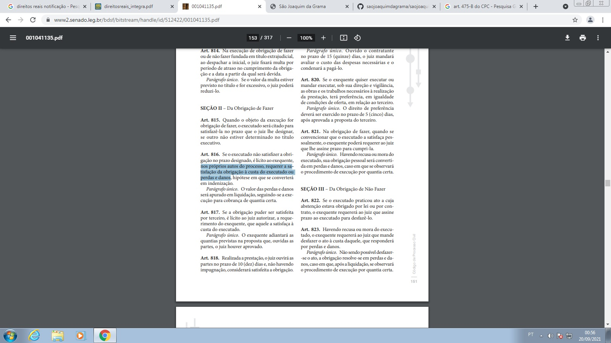

Fatos
contrato 3contrato 4 
O ministro Paulo de Tarso Sanseverino explicou que a teoria foi desenvolvida na França (la perte d'une chance) e tem aplicação quando um evento danoso acarreta para alguém a frustração da chance de obter um proveito determinado ou de evitar uma perda.
Segundo o MINISTRO PAULO DE TARSO SANSEVERINO, A teoria da perda de uma chance aplica-se quando o evento danoso acarreta para alguém a frustração da chance de obter um proveito determinado ou de evitar uma perda.
Não se exige a comprovação da existência do dano final,bastando prova da certeza da chance perdida, pois esta é o objeto de reparação.
| Fato 1 | Visita de rotina da família na fazenda 2016 |
| Fato 2 | Visita a prefeitura e Quitação dos IPTUS 2017 |
| Fato 3 | Aviso da prefeitura da tentativa de fraude do comodatário, tentativa de troca IPTU 2017, esbulho e boletim de ocorrencia policial. |
| Fato 4 | Processo, Recisão do Comodato do filho da ex-caseira - Defensoria Pública do RJ - Processo número |
| Fato 5 | Conversão do comodato em locação no valor de R$12.000,00 ou mora com o não pagamento |
| Fato 6 | Estranha citação do espólio de Maria Teixeira de Oliveira por edital, sobre usucapião - Processo número |
| Fato 7 | Contratação do advogado Fernando para dar andamento no Processo de Comodato (sair em 30 dias ou pagar aluguel, não pagando estando em mora) e Contestar processo de Usucapião inepta do filho da ex-caseira com citãção por edital, sendo que o endereço sempre foi o mesmo. |
| Fato 8 | Inquilino não pagou alugueis ficando compelido em MORA, conforme decisão judicial. |
| Fato 9 | Fernando não deu andamento no processo de comodato a que foi contratado, nem soube fazer contestação da usucapião, por isso se dispõe a montar uma equipe com mais 3 amigos para dar andamento no despejo do inquilino (ex-comodatário), cobrança de alugueis atrasados, e toda a parte administrativa da fazenda, arrendamento, aprovação de projetos, cessão de direitos hereditários, etc. |
| Fato 10 | Enquanto monta a equipe, é assinado contrato para o Fernando concluir a habilitação das herdeiras no inventário da Maria Terixeira de Oliveira, para que os herdeiros pudecessem dispor de toda a sua herança. |
| Fato 11 | Fernando apresenta 3 amigos de sua confiança para trabalharem junto com ele. |
| Fato 12 | Assinado contrato e procurações com todos os poderes, dando autorização para que os outros 4 advogados, Fernando e amigos do Advogado Fernando fizessem a habilitação das herdeiras. 2017 |
| Fato 13 | Estranha e absurda a proposta da equipe de advogados em fazer acordo com o caseiro, onde a sugestão desses foi que a família assinasse um acordo onde deixaria de cobrar a dívida dos alugueis mensais de R$12.0000, e ficar com apenas 20% dos bens de sua propriedade. (por telefone) Obviamente não aceito pela família. |
| Fato 14 | Dezembro de 2020, a família foi barrada de ter acesso ao processo do inventário e solicitou ao Advogado Fernando a senha dos processos para acompanhar o inventário, visto que obtiveram junto ao fórum que ainda não estavam nem habilitadas no inventário e que o mesmo encontrava-se arquivado. (seja propositalmente ou não foi erro grave) |
| Fato 15 | Dezembro de 2020, o Advogado Fernando, confirmou que ninguem da equipe contratada por ele havia dado andamento no inventário e por isso o absurdo arquivamento, e que também, não haviam cobrado os alugueis atrasados nem deram andamento ao despejo do inquilino (ex-comodatário). |
| Fato 16 | Dezembro de 2020, o Advogado Fernando e toda a equipe dele foi notificada no grupo de whatsapp (onde os 4 advogados fazem parte) que pelos motivos de não terem feito o protesto da decisao do comodato, nem mesmo a habilitação das herdeiras no inventário, e por esses motivos de segurança pela desconfiança nas atitudes irresponsáveis dos 4 advogados, as procurações dadas a eles com amplos poderes estariam revogadas. |
| Fato 17 | Dezembro de 2020, O Advogado Fernando verbaliza que a culpa não foi dele pelo não cumprimento do objeto contratual, e sim dos seus amigos advogados, que ele contratou, fazendo assim a familia retomar a confiança apenas nele. |
| Fato 18 | Janeiro de 2021, equipe do Advogado Fernando sem justificativa nennhuma, exige procurações da inventariante e ela reafirma que não tem mais confiança neles pois a procuração com todos os poderes para tal ja havia lhes sido dada em 2017, e até dezembro de 2020 não haviam obtido exito, por essa justa razão já estavam revogados. |
| Fato 19 | Julho de 2021, A inventariante confirmou, que mesmo após o Advogado Fernando, ter induzido a famlia a pensar que o pivô dos "erros" fosse seus antigos amigos advogados, o protesto da cobrança de alugueis, o despejo, e a habilitação das herdeiras ainda não havia sido feita, inclusive os improtantes processos em questão estavam novamente arquivados. |
| Fato 20 | outubro de 2021 - A inventariante percebe a decisão judicial ainda não foi protestada, nem houve ainda a habilitação das herdeiras, e que o prazo para protesto da decisão judicial estaria prescrevendo pós 5 anos ter solicitado o serviço ao Advogado Fernando. |
| Fato 21 | outubro de 2021 - O antigo advogado Cristiano, amigo do Advogado Fernando, confessa que o Advogado Fernando está armando um "golpe" contra a família. |
| Fato 22 | outubro de 2021 - O advogado fernando é informado pela familia, da acusação que ele estaria preparando um golpe contra a família, onde ele estaria pago para perder o processo para a parte contrária, e é intimado a apresentar para a família o distrato com os advogados que o acusaram de golpe e que ele afirma serem o pivô da não prestação do objeto contratual. |
| Fato 23 | outubro de 2021 - O advogado fernando é incapaz de apresentar o distrato com os seus outros 3 amigos, dando a certeza que apesar dele induzir a familia que ele trabalhando sozinho iria "agilizar" , na verdade ele e os outros advogados destituidos estão juntos, agindo de forma procrastinatória, perdendo a chanse do protesto que prescreverá em 5 anos, (faltam alguns dias para a prescrição). |
| Fato 24 | outubro de 2021 - A inventariante agiliza de forma urgente a contratação de um novo advogado para protestar a decisão judicial do processo de comodato antes da prescrição da decisão e para dar andamento ao inventário. |
No andamento da lide, onde os advogados foram contratados para dar andamento no fim de comodato, (sair em 30 dias ou pagar aluguel, não pagando estando em mora) e fazer a contestação da usucapião, o inquilino (ex-comodatário) impetrou uma incabível ação de interdito proibitório, que foi indeferida, o que manteve a posse direta da família.
Erroneamente os advogados de defesa da familia entratam com pedido de reintegração de posse contra um inquilino inadimplente. O fato é que a ação correta é a de manutenção da posse e o despejo, pois a ação correta para a retomada de bem com alugueis atrasados é o despejo.
____________________________________________________________________________________________________
Indícios de erros aparentemente propositais, visando a perca da ação, para beneficiamento dos advogados da família, no exito e recebimento de honorários pela parte contrária.